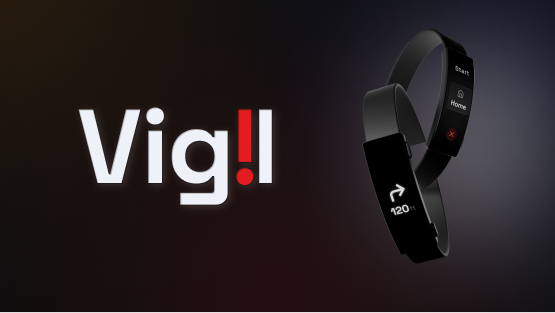

Vigil
Student Team Project
Overview
Personal safety for new corporate hires is often left to chance. Arriving in an unfamiliar city creates a "vulnerability gap" where residents lack the local intuition to navigate safely, while existing tools remain reactive by design. Vigil addresses the real issue: The lack of proactive guidance in an unpredictable environment. By connecting a discreet, easy-to-use navigation band to a live safety model, users can now follow not only the fastest route home, but the safest.
My Role
People walking home alone often feel unsafe but existing safety tools require constant phone interaction
Current solutions either demand too much attention from the user or are too conspicuous, creating more anxiety rather than reducing it.
Key problems identified:
- Existing safety apps require users to actively look at their phone, making them more distracted
- Emergency contact systems are often too slow or complicated to activate under stress
- No seamless way to share live location without broadcasting it publicly
- Users feel more anxious when fumbling with their phone in potentially unsafe situations
- Current apps drain battery quickly due to poor background optimization
Understanding safety behaviors, anxiety triggers, and technology habits through research
I conducted interviews with frequent late-night commuters and analyzed existing safety tools to identify where they fall short.
User Research
I conducted in-depth interviews with college students and young professionals who regularly walk home alone. A consistent theme emerged: people want a safety net that doesn't draw attention to itself or require constant interaction.
Competitive Analysis
I analyzed existing personal safety apps including bSafe, Noonlight, and Life360. While each had strengths, none offered a truly hands-free experience that could operate quietly in the background without constant user input.
User Testing Findings
Prototype testing revealed that voice-activation and ambient awareness features dramatically reduced perceived anxiety. Users felt safer knowing Vigil was running quietly in the background, ready to act without needing to unlock their phone.

A hands-free safety companion that monitors your journey home and alerts trusted contacts if something goes wrong
Vigil runs quietly in the background, using voice commands and automatic check-ins to keep users safe without demanding their attention.
Hands-Free Activation
Users can start a safety session with a single voice command or a quick widget tap. Once active, Vigil monitors the journey using GPS, checking in automatically at set intervals without requiring any screen interaction.
Smart Alerts & Trusted Contacts
If a check-in is missed or the user doesn't respond to a quiet haptic prompt, Vigil automatically notifies a pre-selected trusted contact with the user's live location — no manual SOS required.
Key Features
Vigil combines voice activation, passive GPS monitoring, automatic check-ins, discreet haptic alerts, and trusted contact notifications into one seamless experience — designed to be invisible until it's needed most.